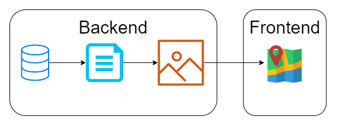
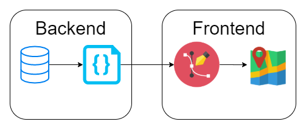
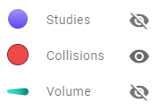
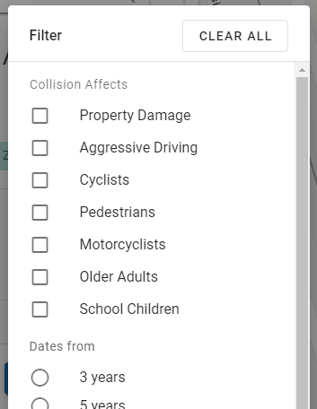
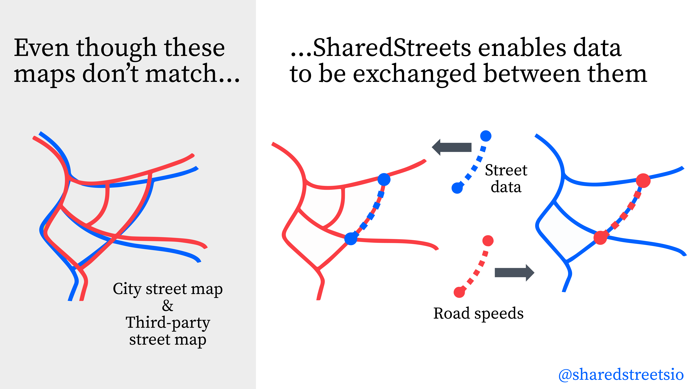

Map All The Things
With Mapbox GL
about me

civic data ♥ maps
wat
that's better
important questions
- how can we render this much data?
- how can we understand this much data?
- how can we process this much data?
rendering
- how can we render this much data?
- how can we understand this much data?
- how can we process this much data?
hello, world!
hello, Mapbox GL!
/* const basemapStyle = ... */
/* const $mapContainer = ... */
const options = {
container: $mapContainer,
dragRotate: false,
keyboard: false,
pitchWithRotate: false,
renderWorldCopies: true,
style: basemapStyle,
};
const map = new mapboxgl.Map(options);
how to put Toronto at the center of the universe
const BOUNDS_TORONTO = new mapboxgl.LngLatBounds(
new mapboxgl.LngLat(-79.639264937, 43.580995995),
new mapboxgl.LngLat(-79.115243191, 43.855457183),
);
const optionsToronto = {
...options,
center: BOUNDS_TORONTO.getCenter(),
maxBounds: BOUNDS_TORONTO,
maxZoom: ZOOM_LEVEL_0,
minZoom: ZOOM_LEVEL_3,
renderWorldCopies: false,
zoom: ZOOM_LEVEL_3,
};
hello, Toronto!
exporting GeoJSON


COPY (
WITH features AS (
SELECT
collision_id AS "id", geom,
ksi, cyclist, pedestrian
FROM collisions.events
WHERE accdate >= now() - interval '3 year'
),
geojson_features AS (
SELECT jsonb_build_object(
'type', 'Feature',
'id', id,
'geometry', ST_AsGeoJSON(geom)::jsonb,
'properties', to_jsonb(features.*) - 'id' - 'geom'
) AS feature
FROM features
)
SELECT jsonb_build_object(
'type', 'FeatureCollection',
'features', jsonb_agg(feature)
) AS feature_collection
FROM geojson_features
) TO STDOUT WITH (HEADER FALSE);
exporting GeoJSON
# save that SQL query as download_collisions.sql, then:
env $(xargs < "/home/ec2-user/cot-env.config") psql \
-v ON_ERROR_STOP=1 \
-f download_collisions.sql > collisions.geojson
loading GeoJSON
let collisions = null;
async function getJson(url) {
const response = await fetch(url);
return response.json();
}
async function initMapbox() {
collisions = await getJson('collisions.geojson');
// ...
}
using GeoJSON
map.addSource('collisions', {
type: 'geojson',
data: collisions,
buffer: 0,
});
map.addLayer({
id: 'collisionsPoints',
source: 'collisions',
type: 'circle',
minzoom: ZOOM_LEVEL_3,
maxzoom: ZOOM_LEVEL_0,
paint: {
'circle-color': COLOR_COLLISION_FILL,
'circle-radius': 6.5,
'circle-stroke-color': COLOR_COLLISION_STROKE,
'circle-stroke-width': 1,
},
});
we can do better
tiling

your data on vector tiles
 understanding
- how can we render this much data?
- how can we understand this much data?
- how can we process this much data?
what to do?
what to do?
what to do?
clustering
clustered sources
map.addSource('collisionsClustered', {
type: 'geojson',
data: collisions,
cluster: true,
clusterMaxZoom: ZOOM_LEVEL_0,
clusterRadius: 30,
});
clustered layers
defining three layers:
'collisionsClustered'for cluster circles'collisionsClusteredCount'for cluster counts'collisionsUnclustered'for point circles
heatmaps
it's all a blur
it's all a blur
map.addLayer({
id: 'collisionsHeatmap',
source: 'collisions',
type: 'heatmap',
minzoom: ZOOM_LEVEL_3,
maxzoom: ZOOM_LEVEL_0,
paint: {
'heatmap-color': [
'interpolate',
['linear'],
['heatmap-density'],
0, COLOR_COLLISION_HEATMAP_ZERO,
0.5, COLOR_COLLISION_HEATMAP_HALF,
1, COLOR_COLLISION_FILL,
],
'heatmap-intensity': [
'interpolate',
['linear'],
['zoom'],
ZOOM_LEVEL_3, 0.33,
ZOOM_LEVEL_2, 1,
],
'heatmap-radius': [
'interpolate',
['linear'],
['zoom'],
ZOOM_LEVEL_3, 5,
ZOOM_LEVEL_2, 10,
],
'heatmap-weight': [
'case',
['get', 'ksi'], 3,
0.03,
],
},
});
all together now
zoom breakpoints
map.addLayer({
id: 'collisionsHeatmap',
source: 'collisions',
type: 'heatmap',
minzoom: ZOOM_LEVEL_3,
maxzoom: ZOOM_LEVEL_2 + 1,
paint: {
'heatmap-opacity': [
'interpolate',
['linear'],
['zoom'],
ZOOM_LEVEL_2, 0.8,
ZOOM_LEVEL_2 + 1, 0,
],
// ...
},
});
map.addLayer({
id: 'collisionsClustered',
source: 'collisionsClustered',
type: 'circle',
minzoom: ZOOM_LEVEL_2,
maxzoom: ZOOM_LEVEL_0,
paint: {
'circle-opacity': [
'interpolate',
['linear'],
['zoom'],
ZOOM_LEVEL_2, 0.2,
ZOOM_LEVEL_2 + 1, 1,
],
// ...
},
});
visual differentiation
data-driven styling
map.addSource('collisionsClustered', {
type: 'geojson',
data: collisions,
cluster: true,
clusterMaxZoom: ZOOM_LEVEL_0,
clusterProperties: {
ksiAny: ['any', ['get', 'ksi']],
},
clusterRadius: 30,
});
data-driven styling
map.addLayer({
// ...
paint: {
'circle-radius': [
'*',
[
'case',
['get', 'ksiAny'], 1.25,
1,
],
[
'step',
['get', 'point_count'],
8,
10, 10,
100, 14,
1000, 16,
],
],
// ...
},
});
styling on the fly
color, size, shape, movement…
styling on the fly
on zoom, pan, hover, click…
other approaches
other approaches
other approaches
processing
- how can we render this much data?
- how can we understand this much data?
- how can we process this much data?
we're done, right?
to the backend!
preprocess and style on the fly!
prebuilt tiles: tippecanoe
tippecanoe \
-o collisions.mbtiles \
-l collisionsClustered \
-Z10 -z16 \
--accumulate-attribute=ksiAny:any \
--cluster-densest-as-needed \
-r1 \
collisions.geojson
prebuilt tiles: .mbtiles
$ sqlite3 collisions.mbtiles
sqlite> .schema
CREATE TABLE metadata (name text, value text);
CREATE TABLE tiles (
zoom_level integer,
tile_column integer,
tile_row integer,
tile_data blob
);
CREATE UNIQUE INDEX name on metadata (name);
CREATE UNIQUE INDEX tile_index on tiles (
zoom_level, tile_column, tile_row
);
prebuilt tiles: mb-util
$ mb-util \
--image_format=pbf --silent \
collisions.mbtiles /data/tiles/collisions
# wait a while...
$ ls /data/tiles/collisions
10 11 12 13 14 15 16 metadata.json
$ ls /data/tiles/collisions/10
281 284 285 286 287 288 296 301
$ ls /data/tiles/collisions/10/281
375.pbf 376.pbf
dynamic tiles
to the backend!
preprocess and style on the fly!
important questions
- render: Mapbox GL
- understand: progressive disclosure, pre-attentive properties, contextual information, etc.
- process: PostgreSQL / PostGIS, tippecanoe, mbutil, cron / Airflow, etc.